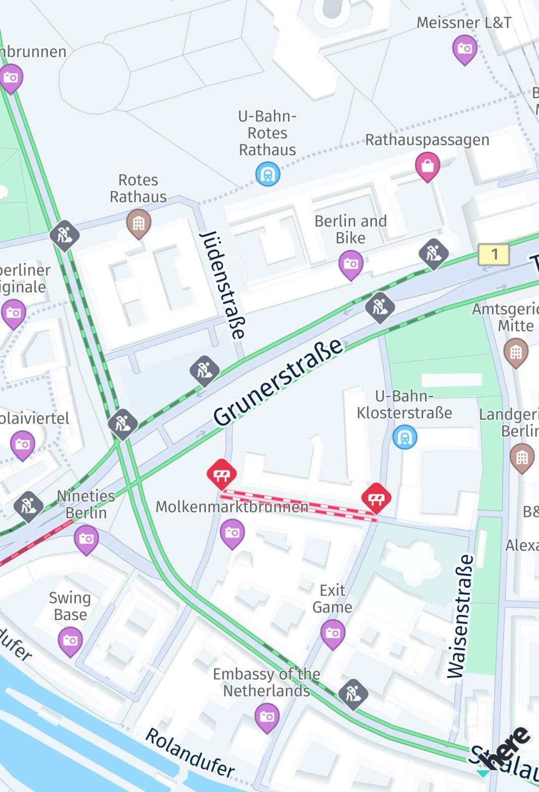
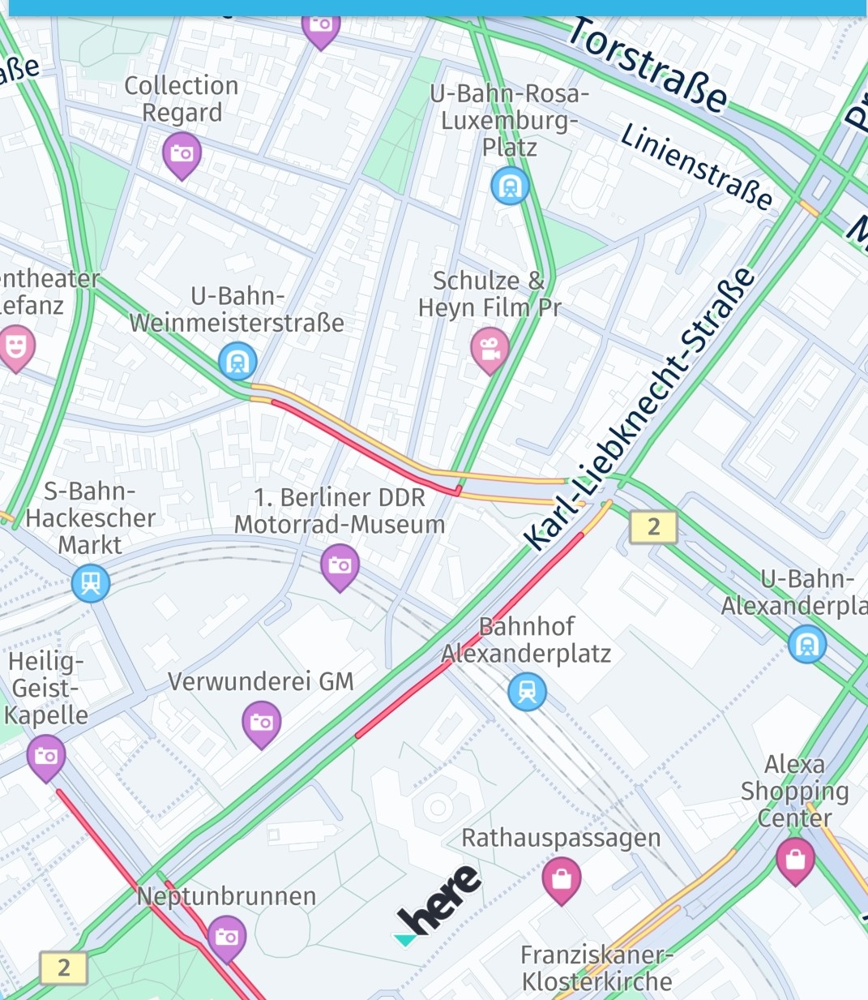

Additional traffic features
Enhance your map applications with real-time traffic data using HERE SDK's advanced traffic features. Display live traffic flow and incidents on the map to keep users informed and help them navigate efficiently. Additionally, you can pick and highlight specific traffic incidents for a detailed view.
Show real-time traffic flow and incidents on the map
You can easily visualize traffic incidents on the map by enabling the map layer state trafficIncidents. The HERE SDK also supports a separate layer to see the current traffic situation. See the example below for how to show or hide a layer on the map.

After a layer is set, the visible area of the map is automatically updated. So you can freely pan the map in all directions to see the latest traffic incidents.
In many situations, drivers are interested in finding the fastest route based on the current traffic jams in a city - or outside a city. The HERE SDK allows you to show a layer holding all the current traffic jams, visualized by lines in different colors to indicate the severity of the jam - always updated in real-time. This feature requires an online connection and consumes slightly more data. However, the traffic lines are shown as part of the map tiles and are therefore highly performant.
Together - or independently - you can visualize such traffic information on the map with just a few lines of code:
void _enableTrafficVisualization() {
// Try to refresh the trafficFlow vector tiles 5 minutes.
// If MapFeatures.trafficFlow is disabled, no requests are made.
//
// Note: This code initiates periodic calls to the HERE Traffic backend. Depending on your contract,
// each call may be charged separately. It is the application's responsibility to decide how
// often this code should be executed.
try {
MapContentSettings.setTrafficRefreshPeriod(Duration(minutes: 5));
} on MapContentSettingsTrafficRefreshPeriodExceptionException {
throw ("TrafficRefreshPeriodException");
}
// Once these layers are added to the map, they will be automatically updated while panning the map.
_hereMapController.mapScene.enableFeatures({MapFeatures.trafficFlow: MapFeatureModes.trafficFlowWithFreeFlow});
// MapFeatures.trafficIncidents renders traffic icons and lines to indicate the location of incidents. Note that these are not directly pickable yet.
_hereMapController.mapScene.enableFeatures({MapFeatures.trafficIncidents: MapFeatureModes.defaultMode});
}
Optionally, for MapFeatures.trafficFlow you can also specify how often a request should be initiated in order to fetch the latest traffic data from the backend.
Setting a new layer state is performed synchronously, but it requires a valid map scene that must have been loaded before. Also, setting a new layer state while a new map scene is being loaded, may result in an exception. For hiding feature layers, you can call:
_hereMapController.mapScene.disableFeatures([MapFeatures.trafficFlow, MapFeatures.trafficIncidents]);
The traffic flow lines are color coded as follows:
- Green: Normal traffic
- Amber/Yellow: High traffic
- Red: Very high traffic
- Black: Blocking traffic

A usage example is available on GitHub as part of the "traffic_app" example app.
Pick traffic incidents
When the trafficIncidents is shown on the MapView, you can set up a tap handler and pick the traffic incidents to get more information.
void _setTapGestureHandler() {
_hereMapController.gestures.tapListener = TapListener((Point2D touchPoint) {
GeoCoordinates? touchGeoCoords = _hereMapController.viewToGeoCoordinates(touchPoint);
// Can be null when the map was tilted and the sky was tapped.
if (touchGeoCoords != null) {
// Pick incidents that are shown in MapSceneLayers.trafficIncidents.
_pickTrafficIncident(touchPoint);
}
});
}
// Traffic incidents can only be picked, when trafficIncidents is visible.
_pickTrafficIncident(Point2D touchPointInPixels) {
Point2D originInPixels = new Point2D(touchPointInPixels.x, touchPointInPixels.y);
Size2D sizeInPixels = new Size2D(1, 1);
Rectangle2D rectangle = new Rectangle2D(originInPixels, sizeInPixels);
_hereMapController.pickMapContent(rectangle, (pickMapContentResult) {
if (pickMapContentResult == null) {
// An error occurred while performing the pick operation.
return;
}
List<PickTrafficIncidentResult> trafficIncidents = pickMapContentResult.trafficIncidents;
if (trafficIncidents.length == 0) {
print("No traffic incident found at picked location");
} else {
print("Picked at least one incident.");
PickTrafficIncidentResult firstIncident = trafficIncidents.first;
_showDialog("Traffic incident picked:", "Type: " + firstIncident.type.name);
// Find more details by looking up the ID via TrafficEngine.
_findIncidentByID(firstIncident.originalId);
}
// Optionally, look for more map content like embedded POIs.
});
}
With the tap handler, we get the touched location in view coordinates that can be passed to mapView.pickMapContent(). Here, we just use a point-sized rectangle, but you can also enlarge the pick area to include more content at once.
The callback provides a PickMapContentResult which can contain a TrafficIncidentResult, but also other embedded types like default POI markers, that are always visible on the map. The TrafficIncidentResult type already provides most information about the incident, but to get all available information, we can use the TrafficEngine (see also below) to search for the picked incident by ID:
_findIncidentByID(String originalId) {
TrafficIncidentLookupOptions trafficIncidentsLookupOptions = new TrafficIncidentLookupOptions();
// Optionally, specify a language:
// the language of the country where the incident occurs is used.
// trafficIncidentsLookupOptions.languageCode = LanguageCode.EN_US;
_trafficEngine.lookupIncident(originalId, trafficIncidentsLookupOptions,
(trafficQueryError, trafficIncident) {
if (trafficQueryError == null) {
print("Fetched TrafficIncident from lookup request." + " Description: " + trafficIncident!.description.text);
} else {
_showDialog("TrafficLookupError:", trafficQueryError.toString());
}
});
}